![]()
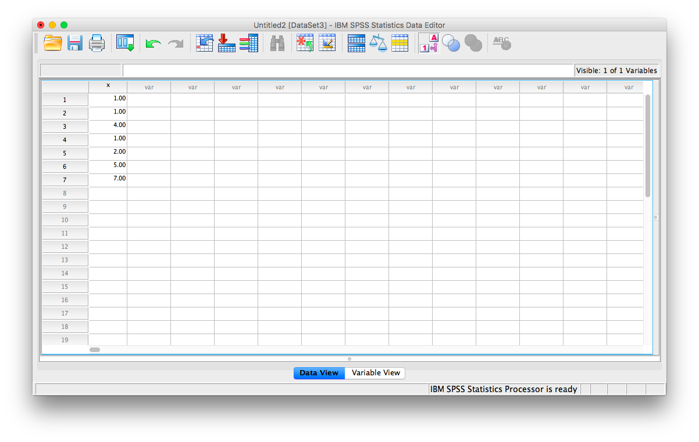
DS.00 - Descriptives
DataSkills 00 Descriptive Statistics
DataSkills 00: Descriptive Statistics
The purpose of this lab is to show you how to compute basic descriptive statistics, including measures of central tendency (mean, mode, median) and variation (range, variance, standard deviation).
General Goals
- Compute measures of central tendency using software
- Compute measures of variation using software
- Ask some questions of a data set using descriptive statistics
Important info
We will be using data from the gapminder project. You can download a small snippet of the data in .csv format from this link (note this dataset was copied from the gapminder library for R) gapminder.csv. If you are using R, then you can install the gapminder package. This method is described later in the R section.
R
Descriptives basics in R
We learned in lecture and from the textbook that data we want to use ask and answer questions often comes with loads of numbers. Too many numbers to look at all at once. That’s one reason we use descriptive statistics. To reduce the big set of numbers to one or two summary numbers that tell use something about all of the numbers. R can produce descriptive statistics for you in many ways. There are base functions for most of the ones that you want. We’ll go over some R basics for descriptive statistics, and then use our new found skills to ask some questions about real data.
Making numbers in R
In order to do descriptive statistics we need to put some numbers in a variable. You can also do this using the c() command, which stands for combine
There a few other handy ways to make numbers. We can use seq() to make a sequence. Here’s making the numbers from 1 to 100
We can repeat things, using rep. Here’s making 10 5s, and 25 1s:
Sum
Let’s play with the number 1 to 100. First, let’s use the sum() function to add them up
Length
We put 100 numbers into the variable one_to_one_hundred. We know how many numbers there are in there. How can we get R to tell us? We use length() for that.
Central Tendency
Mean
Remember the mean of some numbers is their sum, divided by the number of numbers. We can compute the mean like this:
Or, we could just use the mean() function like this:
Median
The median is the number in the exact middle of the numbers ordered from smallest to largest. If there are an even number of numbers (no number in the middle), then we take the number in between the two (decimal .5). Use the median function. There’s only 3 numbers here. The middle one is 2, that should be the median
Mode
R does not a base function for the Mode. You would have to write one for yourself. Here is an example of writing your own mode function, and then using it. Note I searched how to do this on Google, and am using the mode defined by this answer on stack overflow
Remember, the mode is the most frequently occurring number in the set. Below 1 occurs the most, so the mode will be one.
Variation
We often want to know how variable the numbers are. We are going to look at descriptive statistics to describe this such as the range, variance, the standard deviation, and a few others.
First, let’s remind ourselves what variation looks like (it’s when the numbers are different). We will sample 100 numbers from a normal distribution (don’t worry about this yet), with a mean of 10, and a standard deviation of 5, and then make a histogram so we can see the variation around 10..
range
The range is the minimum and maximum values in the set, we use the range function.
var = variance
We can find the sample variance using var. Note, divides by (n-1)
sd = standard deviation
We find the sample standard deviation us SD. Note, divides by (n-1)
Remember that the standard deviation is just the square root of the variance, see:
All Descriptives
Let’s put all of the descriptives and other functions so far in one place:
Descriptives by conditions
Sometimes you will have a single variable with some numbers, and you can use the above functions to find the descriptives for that variable. Other times (most often in this course), you will have a big data frame of numbers, with different numbers in different conditions. You will want to find descriptive statistics for each the sets of numbers inside each of the conditions. Fortunately, this is where R really shines, it does it all for you in one go.
Let’s illustrate the problem. Here I make a date frame with 10 numbers in each condition. There are 10 conditions, each labelled, A, B, C, D, E, F, G, H, I, J.
If you look at the my_df data frame, you will see it has 100 rows, there are 10 rows for each condition with a label in the conditions column, and 10 scores for each condition in the scores column. What if you wanted to know the mean of the scores in each condition? You would want to find 10 means.
The slow way to do it would be like this:
Nobody wants to do that! Not, me I stopped doing it that way, you should to.
group_by and summarise
We can easily do everything all at once using the group_by and summarise function from the dplyr package. Just watch
A couple things now. First, the print out of this was ugly. Let’s fix that. we put the results of our code into a new variable, then we use knitr::kable to print it out nicely when we knit the document
multiple descriptives
The best thing about the dplyr method, is that we can add more than one function, and we’ll get more than one summary returned, all in a nice format, let’s add the standard deviation:
We’ll add the min and the max too:
Describing gapminder
Now that we know how to get descriptive statistics from R, we cam do this will some real data. Let’s quickly ask a few question about the gapminder data.
Note: The above code will only work if you have installed the gapminder package. Make sure you are connected to the internet, then choose the Packages tab from the bottom right panel, and choose install. Thens search for gapminder, choose it, and install it.
What are some descriptive for Life expectancy by continent?
Copy the code from the last part of descriptives using dplyr, then change the names like this:
Generalization Exercise
(1 point - Pass/Fail)
Complete the generalization exercise described in your R Markdown document for this lab.
What is the mean, standard deviation, minimum and maximum life expectancy for all the gapminder data (across all the years and countries). Hint: do not use
group_byWhat is the mean, standard deviation, minimum and maximum life expectancy for all of the continents in 2007, the most recent year in the dataset. Hint: add another pipe using
filter(year==2007) %>%
Writing assignment
(2 points - Graded)
Complete the writing assignment described in your R Markdown document for this lab. When you have finished everything. Knit the document and hand in your stuff (you can submit your .RMD file to blackboard if it does not knit.)
Your writing assignment is to answer these questions in full sentences using simple plain langauge:
- Define the mode.
- Explain what would need to happen in order for a set of numbers to have two modes
- Define the median
- Define the mean
- Define the range
- When calculating the standard deviation, explain what the difference scores represent
- Explain why the difference scores are squared when calculating the standard deviation
- If one set of numbers had a standard deviation of 5, and another had a standard deviation of 10, which set of numbers would have greater variance, explain why.
Rubric
General grading.
- You will receive 0 points for missing answers (say, if you do not answer question c, then you will receive 0 out .25 points for that question)
- You must write in complete sentences. Point form sentences will be given 0 points.
- Completely incorrect answers will receive 0 points.
- If your answer is generally correct but very difficult to understand and unclear you may receive half points for the question
SPSS
In this lab, we will use SPSS to calculate a variety of descriptive statistics. SPSS allows us to specify which statistics we would like calculated and produce them all in one output table. Here, we will learn to:
- Calculate descriptive statistics
- Graph data using a histogram
- Editing graphs
Let’s begin with a short data set {x= 1, 1, 4, 1, 2, 5, 7}
Suppose we want to calculate the measures of central tendency (mean, median, and mode) as well as variability (range, standard deviation, and variance). First, we will have to enter our data into the SPSS spreadsheet. There are 7 measurements, so we will need 7 rows of data (I have also changed the name of this variable in Variable View to x:
Calculating Descriptive Statistics
From here, go to the top menu and choose Analyze, then Descriptive Statistics and then Frequencies:
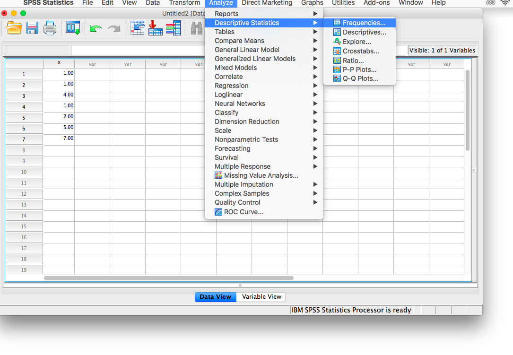
A new window will ask you to specify for which variables you want descriptives statistics calculated. Use the arrow to move the x variable from the left-hand to the right-hand field.
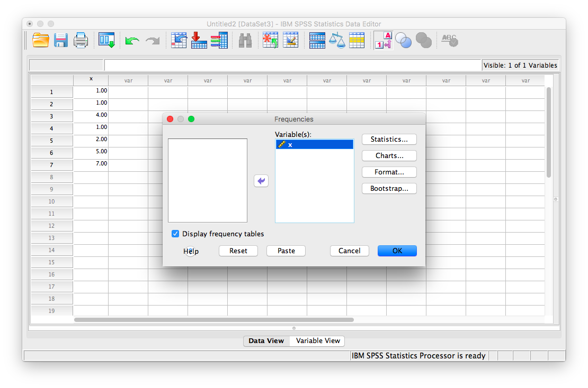
Now, click the Statistics button. This will open a new window containing a list of statistics. You can choose as many as you want to be calculated. We will choose mean, median mode, range, standard deviation, and variance.
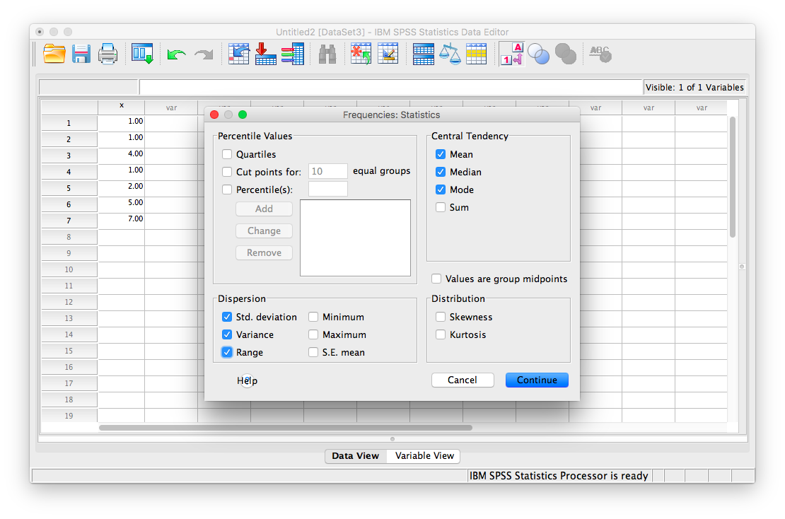
Then click Continue, and then OK. SPSS will produce a set of two output tables: one containing the descriptive statistics we have chosen, and the other a frequency table–a list of all the possible values in our data set and their corresponding frequencies.
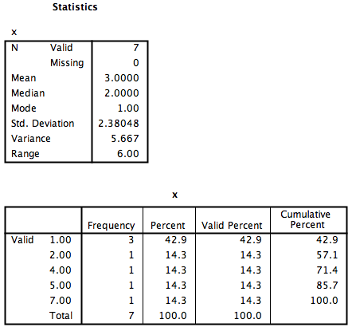
Descriptive Statistics and Histograms
Now let’s use a real dataset to calculate the same measures of central tendency and variability as in the last example, but with the addition of a histogram to visualize a distribution to relate back to the descriptive statistics. Here is a link to the life expectancy dataset we used for our graphing tutorial. It is named life_expectancy.sav.
Suppose we wanted to know about life expectancy (around the world) in 2018. This will include calculating descriptive statistics, as well as graphing a histogram to examine the distribution of our data. SPSS often has neat shortcuts to graph data within other menu options. For example, in the process of asking SPSS to produce a table of descriptive statistics, we can also add a histogram to the output without having to go to the Graphs menu.
First, we go to Analyze, then Descriptive Statistics, then Frequencies.
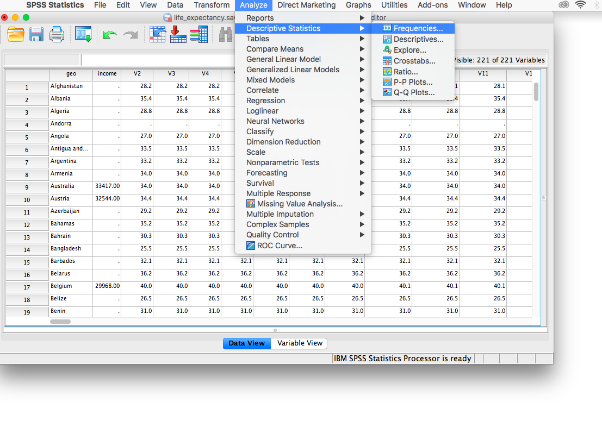
A window will appear asking us to indicate which variable to use. We will scroll all the way down in the list of variables on the left, choose 2018 [V220], and then move it into the field on the right using the arrow.
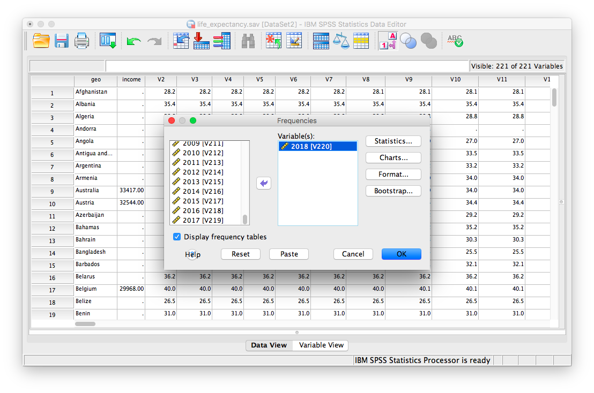
As in the previous example, we will click the Statistics button next, and choose our measures of central tendency (mean, median, mode) as well as variability (range, standard deviation, variance).
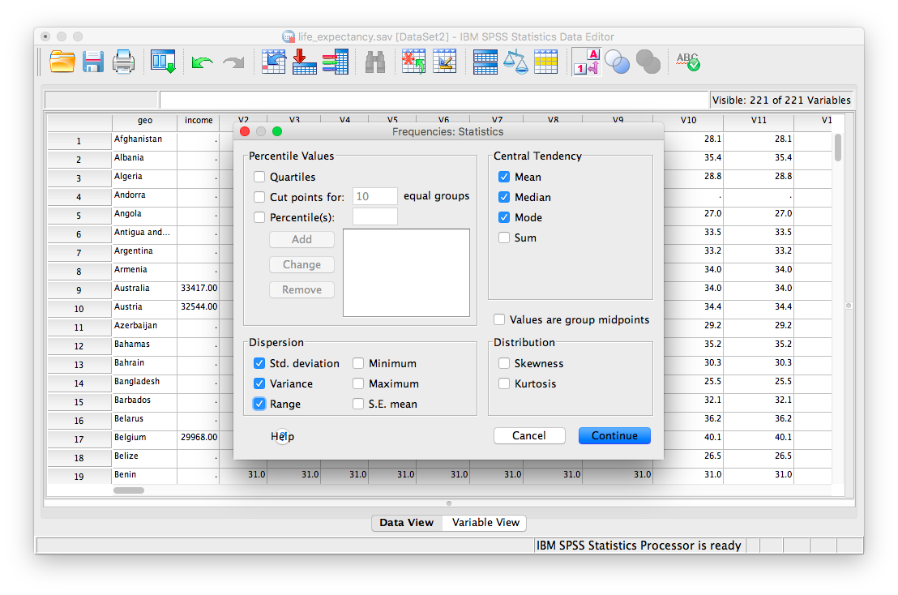
Once we click continue, we are back to the previous window. Here, we can conveniently ask SPSS to insert a histogram. Let’s click on the Charts button:
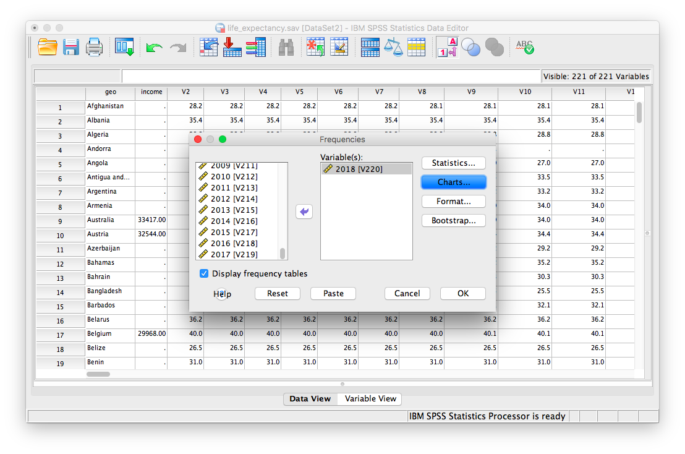
This will open a new window that asks us to specify the type of chart we would like. Let’s select Histogram, and check off Show normal curve on histogram:
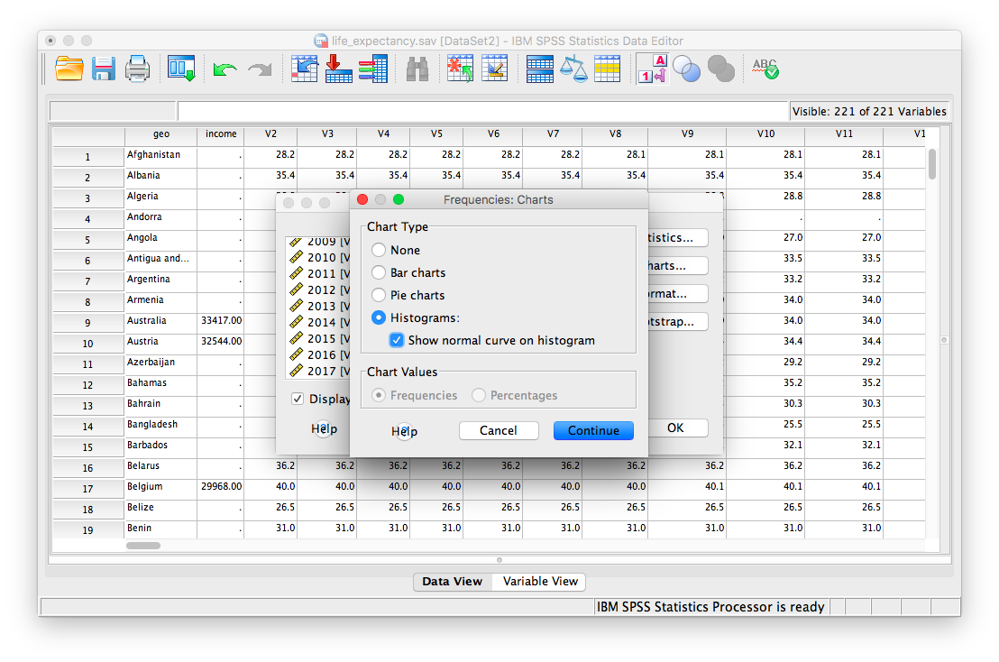
Click Continue, and then OK.
SPSS will produce a table of the requested descriptive statistics, a frequency table (we will ignore this for now because it is long and not relevant to this exercise), and finally, a histogram showing the distribution of life expectancy (in years) with a normal distribution superimposed for comparison.
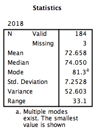
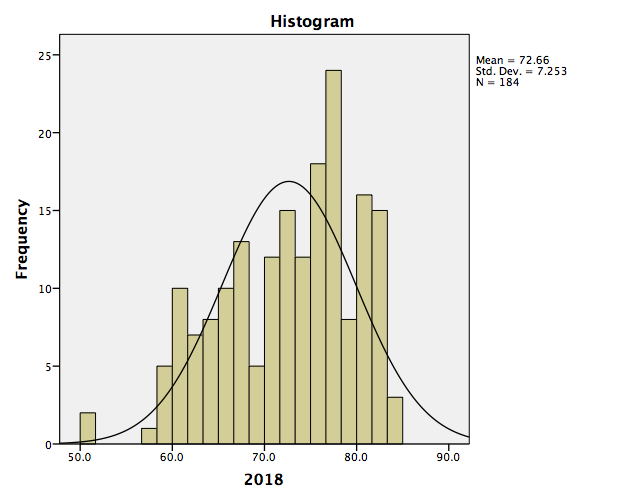
Something to think about: What do the mean, median, and mode indicate about the shape of the distribution? Is it confirmed when we look at the histogram? How does the shape of this distribution compare to the symmetrical normal distribution which is superimposed over it?
Editing graphs
For future reference, we will take this opportunity to make edits to the appearance of this graph. It is helpful to know how to manipulate not just the superficial, cosmetic appearance of data visualizations, but also the components of graphs that communicate important information. One feature to consider is the scale of our axes.
To modify the scale in a graph, first double-click on the graph itself in the output window. A Chart Editor should pop up.
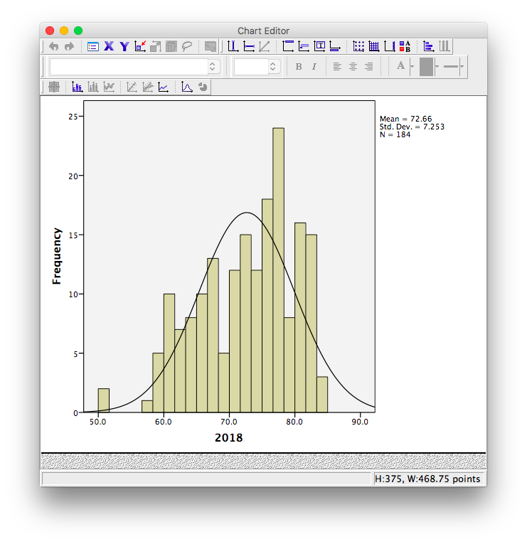
Now, hover your mouse over one of the values on the x-axis, and click down once. You will see all the x-axis values suddenly highlight:
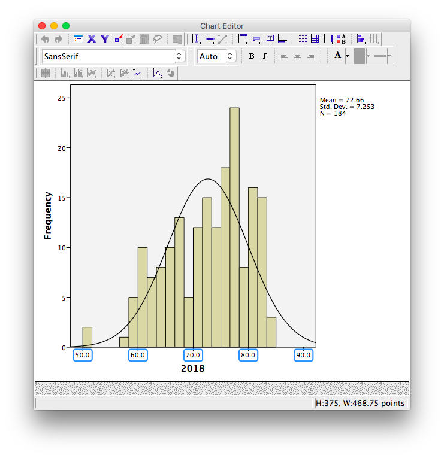
Now that you know how to select the entire axis, double click on it. A properties window will pop up:
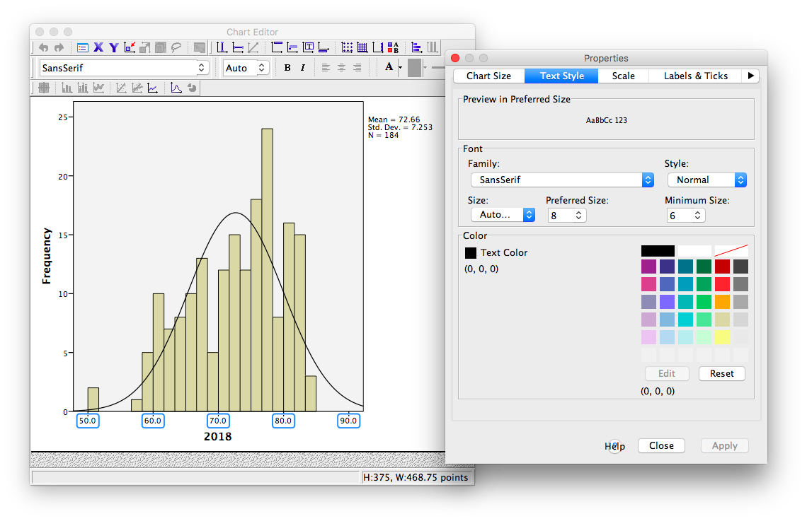
Notice that in the default tab, you can change the fill color of components of your graph. For now, we will select the Scale tab instead:
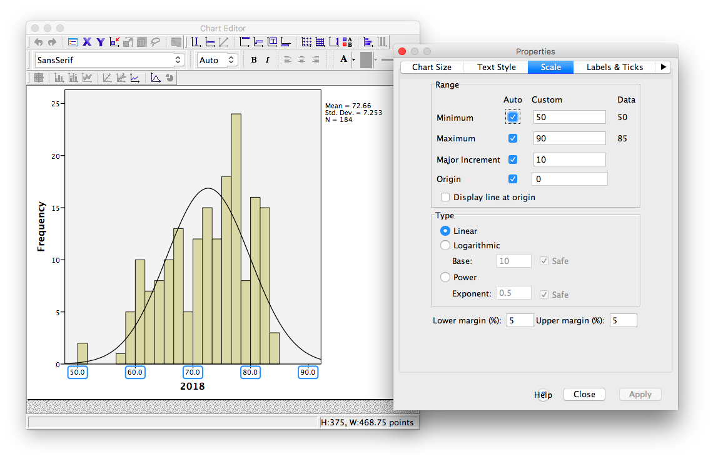
Notice in this tab, we can change the minimum, maximum, and increments of our scale. Lets change the major increment to 5:
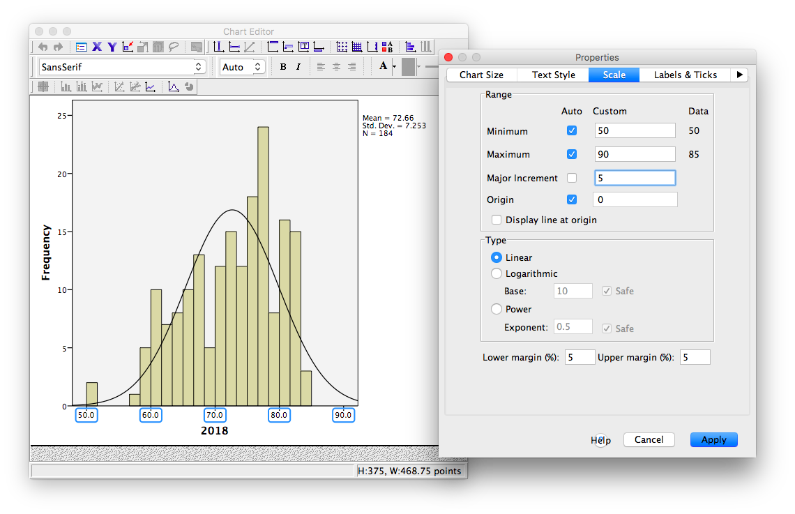
Click Apply. Then Close. Now, close your Chart Editor window by simply x-ing it out. The SPSS output window will now contain your edited graph:
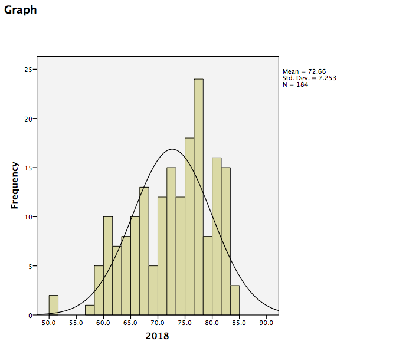
Practice Problems
Using the life expectancy data set, produce a table of output showing the descriptive statistics (measures of central tendency and variability) for both years 1800 and 1934 (during the Great Depression).
Plot histograms of life expectancy for both years. How are these distributions different? (Hint: Plot these on the same axes so that they are comparable).
Reuse
Citation
BibTeX citation:
@online{wright,
author = {Wright, Gordon and Crump, Matthew},
title = {DS.00 - {Descriptives}},
url = {http://introrm.littlemonkeylab.com/week00/dataskills.html},
langid = {en}
}
For attribution, please cite this work as:
Wright, Gordon, and Matthew Crump. n.d. “DS.00 -
Descriptives.” http://introrm.littlemonkeylab.com/week00/dataskills.html.